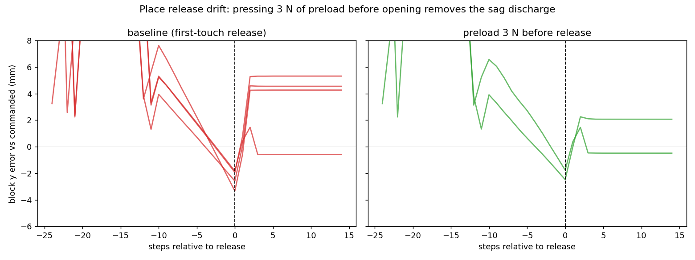

<!doctype html>
<html lang="en">
<head>
<meta charset="utf-8">
<title>Weekly Sync 2026-08-27: Bridge - Faster, Closed-Loop, Better-Calibrated Learning</title>
<meta name="viewport" content="width=device-width, initial-scale=1.0">
<link rel="stylesheet" href="https://cdn.jsdelivr.net/npm/reveal.js@4.6.1/dist/reveal.css">
<link rel="stylesheet" href="https://cdn.jsdelivr.net/npm/reveal.js@4.6.1/dist/theme/white.css">
<link rel="stylesheet" href="https://cdn.jsdelivr.net/npm/reveal.js@4.6.1/plugin/highlight/monokai.css">
<style>
  .reveal { font-size: 28px; }
  .reveal h1 { font-size: 1.5em; }
  .reveal h2 { font-size: 1.1em; margin-bottom: 0.55em; }
  .reveal ul { font-size: 0.8em; line-height: 1.42; display: block; }
  .reveal ol { font-size: 0.8em; line-height: 1.42; display: block; }
  .reveal li { margin: 0.26em 0; }
  .reveal table { font-size: 0.62em; margin: 0 auto; }
  .reveal table th, .reveal table td { padding: 0.28em 0.6em; }
  .reveal .small { font-size: 0.58em; color: #555; }
  .reveal .minor { color: #999; }
  .reveal .minor b, .reveal .minor code { color: #999; }
  .reveal .good { color: #1a7a1a; }
  .reveal .bad { color: #a01515; }
  .reveal .hl { color: #b3541e; font-weight: 600; }
  .reveal .new { display: inline-block; background: #b3541e; color: #fff; font-size: 0.62em; font-weight: 700; padding: 0.05em 0.45em; border-radius: 0.4em; vertical-align: middle; }
  .reveal img { max-height: 520px; }
  .reveal pre { font-size: 0.52em; width: 96%; line-height: 1.3; box-shadow: none; border: 1px solid #ddd; }
  .reveal pre code { max-height: 520px; padding: 0.6em; }
  .reveal code { color: #2a5d8a; }
  .reveal p { font-size: 0.8em; }
  .reveal .commit { font-family: monospace; background: #eef3f8; color: #2a5d8a; padding: 0 0.3em; border-radius: 0.3em; font-size: 0.92em; }
  .reveal .commits { font-size: 0.5em; color: #666; text-align: left; border-top: 1px solid #ddd; margin-top: 0.7em; padding-top: 0.35em; line-height: 1.5; }
  .reveal .tile { flex: 1 1 0; min-width: 0; text-align: center; }
  .reveal .tile video { width: 100%; display: block; }
  .reveal .tile .cap { font-size: 0.5em; color: #444; line-height: 1.35; margin-top: 0.25em; text-align: left; }
  .reveal .grab ul { font-size: 0.6em; line-height: 1.38; }
  .reveal .grab li { margin: 0.32em 0; }
  .reveal svg text { font-family: "Source Sans Pro", Helvetica, sans-serif; }
</style>
</head>
<body>
<div class="reveal"><div class="slides">

<!-- ======================================================================
  Slides are Markdown inside the script block below, separated by a blank
  line, a line of three dashes, a blank line. "Note:" lines are speaker
  notes (press S). Six highlight slides (one feature each, illustrated),
  then one grab-bag slide for everything else since the 08-20 sync.
  Assets: bridge_policy_test_c0.mp4 is the solved policy-mode test episode
  (run_20260826_183224, downscaled); place_release_drift.png comes from
  logs/place_drift/preload_comparison.png (scripts/place_drift_probe.py).
======================================================================= -->

<section data-markdown data-separator="^\r?\n---\r?\n$" data-separator-notes="^Note:">
<script type="text/template">

# Predicator v3 sync, 2026-08-27<br>
<!-- .element: class="small" -->

Main contributions this work is building:

- An agent dropped into an unfamiliar, <span class="hl">partially observable</span> physical environment that <span class="hl">learns an executable world model from a handful of its own experiments</span> - residual process rules + physical parameters + latent state `z`, written as code over a physics engine.
- <b>Abstraction and dynamics learned together</b>: the agent invents the predicates that support its exploration, planning, and execution monitoring.
- <b>Uncertainty over parameters</b>: posterior ensembles over model parameters drive information-seeking experiment design (BED) and gate plan certification by margin. <!-- .element: class="minor" -->
- <b>Long-horizon manipulation solved by planning with the learned model</b><!-- .element: class="minor" -->
- Four domains, one hidden-mechanism class each: latent accumulation (boil), parameter mismatch (domino), force fields (fan), constraint creation (bridge).

<div style="display: flex; gap: 0.6em; justify-content: center; align-items: flex-start; margin-top: 0.3em;">
<div class="tile" style="flex: none;"><video src="assets/boil_oracle_demo.mp4" style="height: 150px; width: auto;" controls autoplay loop muted playsinline></video><div class="cap" style="text-align: center;">boil</div></div>
<div class="tile" style="flex: none;"><video src="assets/domino_al_test_seed0.mp4" style="height: 150px; width: auto;" controls autoplay loop muted playsinline></video><div class="cap" style="text-align: center;">domino</div></div>
<div class="tile" style="flex: none;"><video src="assets/fan_al_test_seed1.mp4" style="height: 150px; width: auto;" controls autoplay loop muted playsinline></video><div class="cap" style="text-align: center;">fan</div></div>
<div class="tile" style="flex: none;"><video src="assets/bridge_oracle_hybrid_seed0.mp4" style="height: 150px; width: auto;" controls autoplay loop muted playsinline></video><div class="cap" style="text-align: center;">bridge</div></div>
</div>

This week: exploration/learning in bridge. Best single result: <span class="good">the policy arm solved the held-out test right after its first 52-minute learn cycle</span>.
<!-- .element: class="small" -->

Note: 59 commits since the 08-20 deck. Six features get their own slide; everything else is one bullet each on the grab-bag slide near the end. The week ended with all arms consolidated into one fresh 6-run generation launched this morning. The contribution list mirrors the ablation axes on the approaches slide: uncertainty, BED, and z are each both a contribution and an ablation.

---

## Test-time artifact can be a program: closed-loop policy mode

<div style="display: flex; gap: 0.7em; align-items: flex-start;">
<div class="tile" style="flex: 0 0 34%;">
<video src="assets/bridge_policy_test_c0.mp4" controls autoplay loop muted playsinline></video>
<div class="cap">cycle-0 test, seed 0: <code>policy.py</code> drives 28 options closed-loop to the goal - <b>no LLM during execution</b>. Test <span class="good">1/1</span> after one 52-min learn.</div>
</div>
<div style="flex: 1 1 0; min-width: 0;">
<pre><code class="language-python" data-trim>
def get_option(state, memory):          # -> next plan line, or "DONE"
    memory.setdefault("phase", "legs")
    fail = memory.get("last_failure")   # surfaced by the executor
    if memory["phase"] == "legs":       # stand both legs on their pads
        for leg in ("leg0", "leg1"):
            if leg_ok(leg):             # verified from the CURRENT state
                continue
            if held() == leg:
                k = bump(leg) if fail else ntry(leg)
                jig = [0.0, 0.004, -0.004, 0.008][k % 4]
                return place(tx[leg] + jig, ty[leg], 0.47)
            return pick(leg)            # grasp offset varies per retry
        memory["phase"] = "stage"
    if memory["phase"] == "stage":      # butt the 3 spans into a row
        ...                             # glue, cure, seat, verify
    return "DONE"
</code></pre>
<p class="small" style="margin-top: 0.2em;">condensed from a captured bridge <code>policy.py</code> (seed 0, 08-26)</p>
</div>
</div>

- Every 08-20 eval death was open-loop brittleness: a fixed captured plan diverged once and the episode was over. Now the solve agent writes <span class="hl">`policy.py: get_option(state, memory)`</span> - validated in the belief model, then executed with the same contract in the real env.
- Option failures do not end the episode: the failure text lands in `memory["last_failure"]` and the policy answers from the current state - <span class="hl">recovery is the point</span>.

Note: The captured policy is a stage machine that verifies each stage's effect from the state and retries with CHANGED parameters after a failure - the jig array in the excerpt is real. The guards came from watching runs burn 20-40 of their 50 options re-issuing one colliding pick: three identical failures (or three clean no-ops) now end the episode with an attributable cause. Same contract in belief validation and real execution, so loop-prone policies fail validation before capture.

---

## Place release drift: the arm's sag was ejecting placed blocks



- In live test episodes, blocks verified in-tolerance pre-release then drifted <span class="bad">6-12 mm in y during finger-opening / retreat / settling</span> - past the entire 12 mm bond window. The controlled probe isolated the core mechanism: <span class="bad">+3.3 to +4.5 mm within ~2 steps of the gripper opening</span> (x drift ~0.5-1 mm) - the position-controlled arm's stored elastic strain discharging into the released block along the direction the arm leans.
- Fix: <span class="hl">press to a small support preload (3 N) before opening</span> - the strain discharges into the table instead. Post-release drift drops to <span class="good">+0.1-0.3 mm</span>, final error under 1 mm.

Note: The mechanism: the settle stroke previously ended at FIRST contact, with the arm still carrying elastic strain from pressing the block down; opening the fingers released that strain into the block. The probe plots show every baseline trace jumping at step 0 (release) and staying offset; the preload traces settle at the commanded pose. The companion leg-drift probe proved the earlier leg wandering was downstream of weld sag, not a tack defect - which is the pin fix on the grab-bag slide.

---

## Rollouts now hide behind the agent's thinking time

<svg viewBox="0 0 980 258" style="width: 96%; max-height: 300px; display: block; margin: 0 auto;">
  <!-- sequential lane -->
  <text x="10" y="24" font-size="17" font-weight="bold" fill="#333">before: sequential sim.run loop</text>
  <rect x="120" y="36" width="115" height="34" fill="#cdd9e5"/><text x="177" y="58" font-size="15" text-anchor="middle" fill="#333">think</text>
  <rect x="237" y="36" width="55" height="34" fill="#e5a464"/><text x="264" y="58" font-size="14" text-anchor="middle" fill="#5a3210">r1</text>
  <rect x="294" y="36" width="55" height="34" fill="#e5a464"/><text x="321" y="58" font-size="14" text-anchor="middle" fill="#5a3210">r2</text>
  <rect x="351" y="36" width="55" height="34" fill="#e5a464"/><text x="378" y="58" font-size="14" text-anchor="middle" fill="#5a3210">r3</text>
  <rect x="408" y="36" width="55" height="34" fill="#e5a464"/><text x="435" y="58" font-size="14" text-anchor="middle" fill="#5a3210">r4</text>
  <rect x="465" y="36" width="55" height="34" fill="#e5a464"/><text x="492" y="58" font-size="14" text-anchor="middle" fill="#5a3210">r5</text>
  <rect x="522" y="36" width="55" height="34" fill="#e5a464"/><text x="549" y="58" font-size="14" text-anchor="middle" fill="#5a3210">r6</text>
  <rect x="579" y="36" width="115" height="34" fill="#cdd9e5"/><text x="636" y="58" font-size="15" text-anchor="middle" fill="#333">think</text>
  <text x="710" y="58" font-size="15" fill="#a01515">agent idle: 3.5 h in one session</text>
  <!-- async lane -->
  <text x="10" y="108" font-size="17" font-weight="bold" fill="#333">now: sim.run_async + sim.gather</text>
  <rect x="120" y="132" width="345" height="34" fill="#cdd9e5"/><text x="292" y="154" font-size="15" text-anchor="middle" fill="#333">think (uninterrupted)</text>
  <text x="120" y="126" font-size="13" fill="#b3541e">run_async(plan) x6</text>
  <text x="465" y="126" font-size="13" fill="#b3541e" text-anchor="end">gather()</text>
  <rect x="132" y="176" width="150" height="16" fill="#e5a464"/><text x="290" y="189" font-size="13" fill="#5a3210">r1</text>
  <rect x="132" y="196" width="150" height="16" fill="#e5a464"/><text x="290" y="209" font-size="13" fill="#5a3210">r2</text>
  <rect x="132" y="216" width="150" height="16" fill="#e5a464"/><text x="290" y="229" font-size="13" fill="#5a3210">r3</text>
  <rect x="310" y="176" width="150" height="16" fill="#e5a464"/><text x="468" y="189" font-size="13" fill="#5a3210">r4</text>
  <rect x="310" y="196" width="150" height="16" fill="#e5a464"/><text x="468" y="209" font-size="13" fill="#5a3210">r5</text>
  <rect x="310" y="216" width="150" height="16" fill="#e5a464"/><text x="468" y="229" font-size="13" fill="#5a3210">r6</text>
  <text x="30" y="205" font-size="13" fill="#666">forked</text>
  <text x="30" y="221" font-size="13" fill="#666">workers</text>
  <text x="530" y="154" font-size="15" fill="#1a7a1a">measured on a compute node: 6 bridge rollouts fully hidden</text>
  <text x="530" y="175" font-size="15" fill="#1a7a1a">behind a 60 s think window - 30 s of sim cost, 0 s added wall</text>
</svg>

- Learn sessions used to alternate: think, run a belief rollout, wait, repeat. <span class="hl">`sim.run_async(plan)` forks the rollout into a child process and returns a handle; `sim.gather()` collects results later</span> - so rollout campaigns overlap the agent's editing and thinking.
- Built on the proven fork path (copy-on-write session state, per-child deadlines, window-capped queue); results are stamped with the `simulator.py` version and flagged if the model changed since launch.

Note: The motivating session spent 3.5 hours in hand-written sequential sim.run loops. The registry's two load-bearing rules, learned from the parallel-validation work: the reaper thread never logs and never forks (a forked child must not inherit a lock held by a thread that does not exist in it), and all forking happens on caller threads via cooperative pumping. This is the agent-facing half; the harness-side fork-parallel validation (4-8x faster learns) is on the grab-bag slide.

---

## Why validated plans still failed: model-bias margin, now gated

- Bridge cycles 5-7: a glue dab aimed at 16 mm of the true 20 mm radius <span class="bad">validated cleanly three times, then failed three times</span> - nominal validation runs the model's own constants, so the margin consumed by model bias is invisible to it.
- New capture gate: <span class="hl">a submission must also survive the calibrated rule-parameter ensemble members</span> - surviving only at the point estimate is rejected as PARAM-SENSITIVE. Prompts now require uncertain constants as declared `ParamSpec`s (a literal is earned by two-sided data) and max-margin operating points at window centers.

Note: The physics-margin sweep could not catch this: it perturbs identified base-physics params, and the bridge agent's PHYSICAL_PARAMS registry is empty - every learned constant is a rule param, so the old gate swept nothing. The ensemble is the same posterior spread info-seeking exploration already scores with, so no new machinery - the gate swaps members through the live fitted-params view exactly like the disagreement scorer does.

---

## Execution monitoring: only verifiable annotations may abort an episode

- Invented predicates may read `state.latent` - correct inside belief rollouts, <span class="bad">unverifiable on real observations</span> (the real env carries no latent): the annotation reads False no matter what physically happens. Seen live twice (bridge seed 0): <span class="bad">tests aborted at step 10/18 and one option from the goal</span> - with the bonds verifiably formed.
- Fix: <span class="hl">capture re-probes each annotation on its certifying belief state with the latent stripped</span> - unverifiable annotations never enter the executed sketch; in the monitor, a classifier that raises is "cannot evaluate", never divergence.
- The capture message lists the exclusions, so the agent learns to prefer <span class="hl">observable annotations</span>.

Note: This is the annotation-side twin of last week's observability lessons: the monitor may only abort on evidence that exists at execution time. Related hardening on the grab-bag slide: an annotation must also hold in every passing validation rollout (not once by luck), and captures record a reliability tally in the journal.

---

## Design: structural uncertainty in the learned model <span class="new">proposal</span>

```python
PARAM_SPECS = [
    ParamSpec("cure_mechanism", kind="structural", choices=["clock", "contact"]),  # new
    ParamSpec("cure_threshold", init_value=25, lo=5, hi=80),
]
LATENT_INIT = {"cure_progress": 0.0}

def cure_rule(observation, latent, history, updates, params):
    ticking = dab_present(observation)
    if params["cure_mechanism"] == "contact":   # committed choice, read like any other param
        ticking = ticking and touching_streak(observation)
    if ticking:
        latent["cure_progress"] += 1.0
    updates[dab]["cured"] = float(latent["cure_progress"] >= params["cure_threshold"])
    return updates
```

example from `docs/structural-uncertainty.md`: after confounded coverage (every dab &rarr; an immediate place), clock and contact cure fit identically - so both survive as enumerated structures, w = 0.5 / 0.5
<!-- .element: class="small" -->

- Today `ParamSpec` declares only continuous uncertainty; <span class="bad">which mechanism drives an effect is a silent guess</span>. Proposal: structural hypotheses become enumerated `ParamSpec`s, fit by enumerate-and-weight (never inside the MCMC walk).
- Invariant: <span class="hl">hard within a member, soft across the ensemble</span> - each ensemble member commits to ONE mechanism, so every imagined rollout is one self-consistent world. Deliberately not PoE-World blending: no "70% cured" physics.
- Margin gate unchanged: a certified plan must reach the goal in <span class="hl">every surviving world</span>. When no robust plan exists, the learn step writes the discriminator into `open_questions.md` (dab, wait 40 steps untouched, then place - weld timing reveals the mechanism) and one episode collapses the posterior.
- Not implemented; sequenced behind the current generation's verdict (`docs/structural-uncertainty.md`).

Note: From the 2026-08-26 discussion. Two free consequences make it attractive: the info-seeking explorer already scores ensemble disagreement, so structure-split members steer exploration toward discriminators with zero new code; and the margin gate already swaps members wholesale, so structure-carrying members flow through untouched. Structures that never disagree on a plan that matters coexist indefinitely at zero cycle cost, because robust plans certify straight through them.

---

## Everything else this week, one line each

<div class="grab">

- <b>Long runs</b>: per-cycle checkpoint + `--auto_resume` relaunch (12 h walls no longer lose work; unlocks the 2-day preemptable partition); a cycle's episodes persist before the learn step; resume ignores stale/foreign checkpoints and re-tests a killed test phase.
- <b>Physics</b>: carried welded assemblies are kinematically pinned while held (constraints flexed 9-12 deg under load: drooping beams, violent latches); honest per-branch Wait termination reasons; reverted the in-skill Place drift check (punished benign settling - divergence detection belongs to the monitor).
- <b>Faster cycles</b>: fork-parallel validation/margin/probe rollouts, identical verdicts by construction, <span class="good">4-8x faster learns</span>, now the bridge default; the ~5 h/cycle exploration emcee fit skipped (~0.1% gain); solver fit reused for the exploration refit.
- <b>More per cycle</b>: every learn session opens on a divergence report incl. entirely-missing mechanisms, located per (traj, step, option) - now also at cycle 0; `open_questions.md` ledger flows learn &rarr; explore; the explorer keeps a seeded suffix past a refinement failure instead of truncating the experiment.
- <b>Prompt discipline</b>: a recipe that reached the goal in the real env is the incumbent - deviation is a new experiment; delayed processes need their explicit Waits; pose-writing rules need recorded evidence (and confirmed rules survive noisy fit metrics).
- <b>Monitoring</b>: an annotation must hold in every passing validation rollout, and captures record a reliability tally in the journal.
- <b>Early stopping</b>: the test-driven mode was silently broken (read a never-written key) - fixed to require N consecutive perfect tests, but bridge stays train-driven: test tasks are eval-only.
- <b>Tooling</b>: log-viewer rows are true cycles with resume lineage and a UK/MIT timezone toggle; all agent-facing cycle stamps unified to main.py's 0-based ids; the years-old CI pickle flake root-caused to a dill bug (pin 0.3.9, retry retired).
- <b>Configs</b>: validated fixes folded into the standard bridge arm as they passed regression; forks retired; a fresh 6-run generation launched this morning - seeds 0/1, sketch + policy, plus one-demonstration arms.

</div>

Note: Commit refs on request - this is 40+ commits compressed. The one-demonstration arms are the new comparison axis: demo-free vs one initial demo, same stack, disjoint experiment ids.

---

## Paper: baselines / ablations

<div class="grab">

1. <b>SimPredicator (ours)</b>.
2. <b>Oracle residual world model</b> - plan with our pipeline, but given a hand-written residual world model rather than a learned one.
3. <b>Model-free agentic planning</b> - prompt the same coding agent to interact with the environments and solve the tasks directly, without the world-model learning harness, holding the amount of interaction fixed.
4. <b>Base-simulator agentic planning</b> (no world-model learning) - use our pipeline and initialization, but omit the learning step.
5. <b>A VLA baseline?</b>
6. <b>An HRL baseline?</b>
7. <b>Operator learning and planning</b> - learn operators only, given oracle predicates and full observability.
8. <b>Ablate uncertainty</b> - do not represent uncertainty over the model parameters; keep point estimates only.
9. <b>Ablate BED</b> - skip the information-gain maximization step when designing exploration experiments.
10. <b>Ablate z</b>.

</div>

Note: 2 is the upper bound (already running as the oracle_hybrid_sim regression arm), 3-7 are external comparisons, 8-10 are ablations of our own components. 5 and 6 are open questions for this meeting - which concrete VLA / HRL systems are worth the integration cost in these PyBullet domains? 10 ablates the latent channel: rules over observable features only.

---


</script>
</section>

</div></div>
<script src="https://cdn.jsdelivr.net/npm/reveal.js@4.6.1/dist/reveal.js"></script>
<script src="https://cdn.jsdelivr.net/npm/reveal.js@4.6.1/plugin/markdown/markdown.js"></script>
<script src="https://cdn.jsdelivr.net/npm/reveal.js@4.6.1/plugin/highlight/highlight.js"></script>
<script src="https://cdn.jsdelivr.net/npm/reveal.js@4.6.1/plugin/notes/notes.js"></script>
<script>
  Reveal.initialize({
    hash: true,
    slideNumber: true,
    width: 1280,
    height: 720,
    autoPlayMedia: true,
    plugins: [RevealMarkdown, RevealHighlight, RevealNotes],
  });
</script>
</body>
</html>
